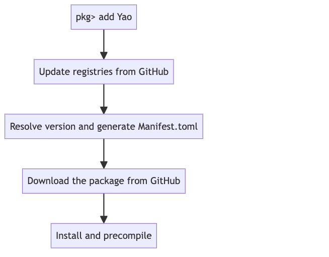

Tuple has fixed memory layout, but array does not.
tp = (1, 2.0, 'c')(1, 2.0, 'c')typeof(tp)Tuple{Int64, Float64, Char}isbitstype(typeof(tp))true
arr = [1, 2.0, 'c']1
2.0
'c': ASCII/Unicode U+0063 (category Ll: Letter, lowercase)typeof(arr)Vector{Any} (alias for Array{Any, 1})isbitstype(typeof(arr))false
Boardcasting
x = 0:0.1:πy = sin.(x)using Plotsplot(x, y; label="sin")mesh = (1:100)'Broadcasting over non-concrete element types may be type unstable.
eltype(arr)Anyarr .+ 12
3.0
'd': ASCII/Unicode U+0064 (category Ll: Letter, lowercase)eltype(tp)Anyusing TropicalNumbersnothingThe file structure of a package
project_folder = dirname(dirname(pathof(TropicalNumbers)))/home/runner/.julia/packages/TropicalNumbers/kRhOl

Unit Test
using Testnothing@test Tropical(3.0) + Tropical(2.0) == Tropical(3.0)Test Passed@test_throws BoundsError [1,2][3]Test Passed
Thrown: BoundsError@test_broken 3 == 2Test Broken
Expression: 3 == 2@testset "Tropical Number addition" begin
@test Tropical(3.0) + Tropical(2.0) == Tropical(3.0)
@test_throws BoundsError [1][2]
@test_broken 3 == 2
endTest.DefaultTestSet("Tropical Number addition", Any[Test Broken
Expression: 3 == 2], 2, false, false, true, 1.707316862782449e9, 1.707316862807562e9, false, "none")With PkgTemplates.
https://github.com/CodingThrust/HappyMolecules.jl
julia> isbitstype(Complex{Float64})
julia> sizeof(Complex{Float32})
julia> sizeof(Complex{Float64})But Complex{BigFloat} is not
julia> sizeof(Complex{BigFloat})
julia> isbitstype(Complex{BigFloat})The size of Complex{BigFloat} is not true! It returns the pointer size!
The performance of a CPU is measured by the number of floating point operations per second (FLOPS) it can perform. The floating point operations include addition, subtraction, multiplication and division. The FLOPS can be related to multiple factors, such as the clock frequency, the number of cores, the number of instructions per cycle, and the number of floating point units. A simple way to measure the FLOPS is to benchmarking the speed of matrix multiplication.
julia> using BenchmarkTools
julia> A, B = rand(1000, 1000), rand(1000, 1000);
julia> @btime $A * $B;
12.122 ms (2 allocations: 7.63 MiB)The number of FLOPS in a \(n\times n\times n\) matrix multiplication is \(2n^3\). The FLOPS can be calculated as: \(2 \times 1000^3 / (12.122 \times 10^{-3}) = 165~{\rm GFLOPS}\).
Any type vector is flexible. You can add any element into it.
vany = Any[] # same as vany = []
typeof(vany)
push!(vany, "a")
push!(vany, 1)Fixed typed vector is more restrictive.
vfloat64 = Float64[]
vfloat64 |> typeof
push!(vfloat64, "a")Do not abuse the type system. e.g. a “zero” cost implementation
Val(3.0) # just a type
f(::Val{1}) = Val(1)
f(::Val{2}) = Val(1)It violates the Performance Tips, since it transfers the run-time to compile time.
let biganyv = collect(Any, 1:2:20000)
@benchmark for i=1:length($biganyv)
$biganyv[i] += 1
end
endlet bigfloatv = collect(Float64, 1:2:20000)
@benchmark for i=1:length($bigfloatv)
$bigfloatv[i] += 1
end
endfib(x::Int) = x <= 2 ? 1 : fib(x-1) + fib(x-2)
@benchmark fib(20)addup(::Val{x}, ::Val{y}) where {x, y} = Val(x + y)f(::Val{x}) where x = addup(f(Val(x-1)), f(Val(x-2)))@benchmark f(Val(20)) end